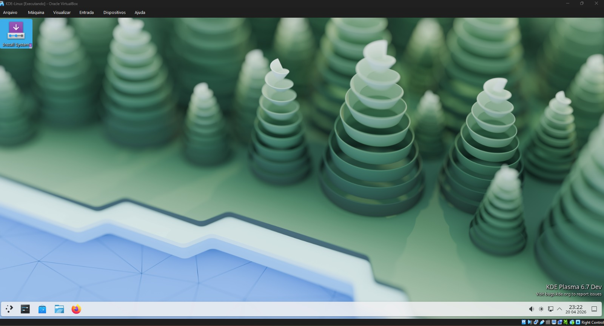
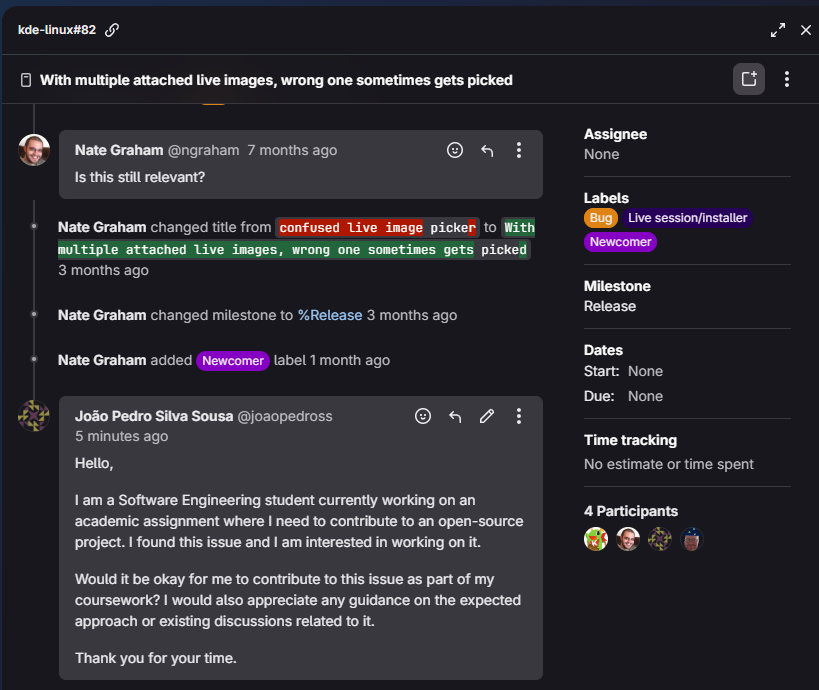
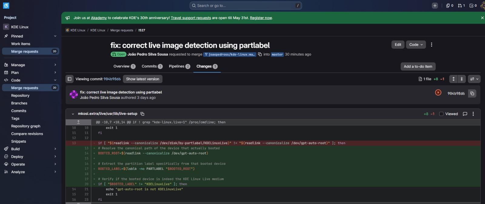
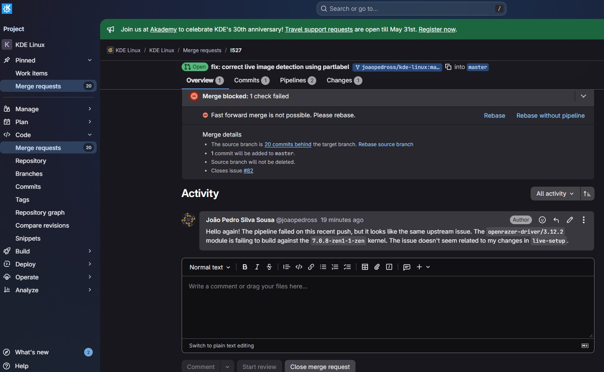
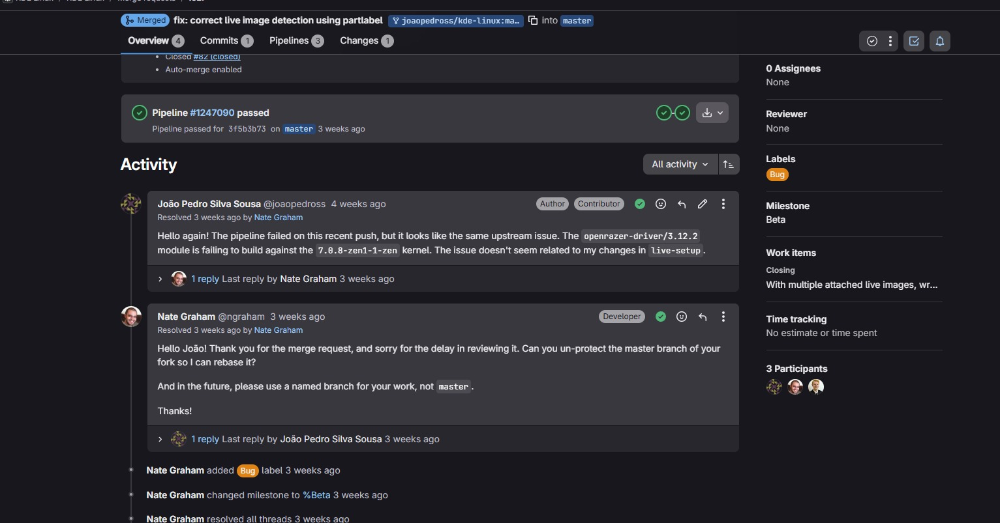
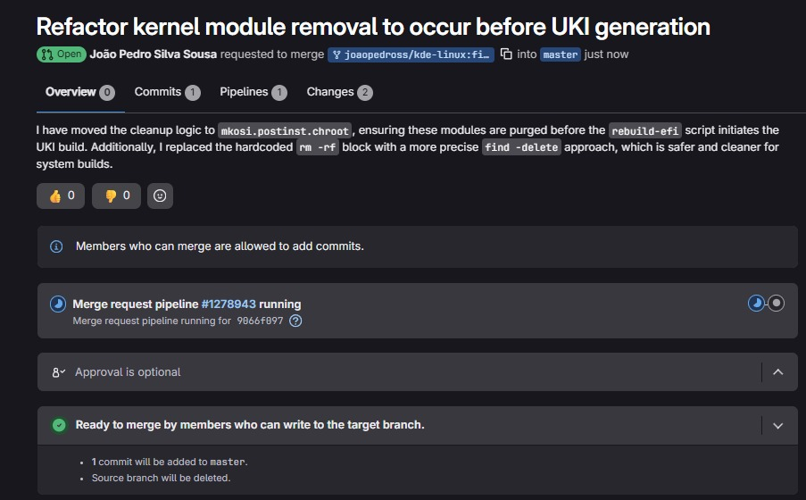
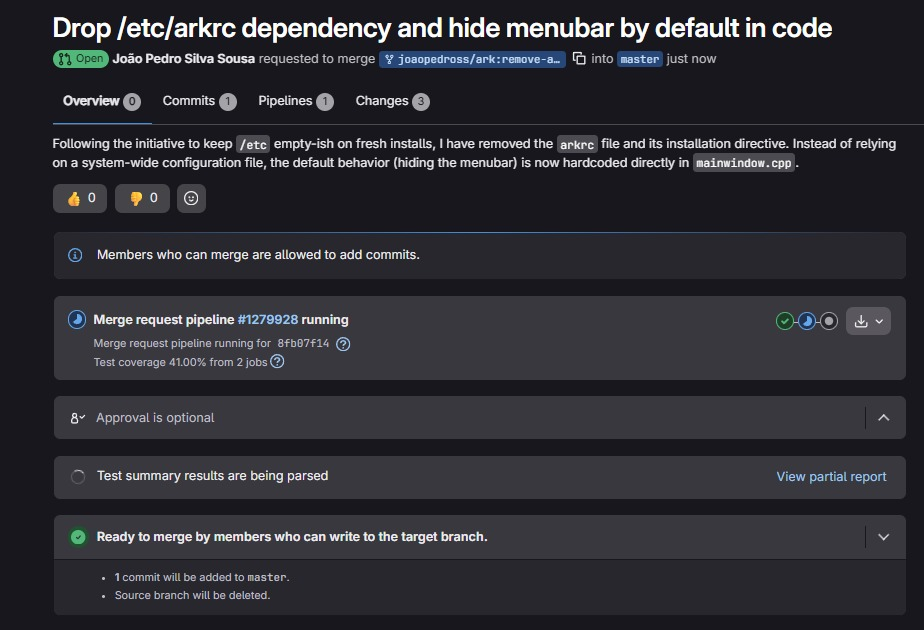

Diário de Bordo – João Pedro
Sprint 0 - 13/04/2026 - 19/04/2026
Resumo da Sprint
Nesta sprint, o foco principal foi preparar o ambiente para rodar o KDE Linux em uma máquina virtual no Windows.
Durante o processo, enfrentei dificuldades relacionadas à configuração do ambiente, especialmente na conversão do arquivo .raw para um formato compatível com o VirtualBox e na inicialização da máquina virtual.
Apesar dos erros de boot enfrentados, consegui avançar significativamente na compreensão do processo de virtualização e na configuração de ambientes Linux experimentais.
| Data | Atividade | Tipo (Código/Doc/Discussão/Outro) | Link/Referência | Status |
|---|---|---|---|---|
| 17/04 | Instalação do VirtualBox | Setup | Link | Concluído |
| 18/04 | Download da imagem .raw do KDE Linux |
Setup | Link | Concluído |
| 18/04 | Conversão de .raw para .vmdk com VBoxManage |
Código | - | Concluído |
| 19/04 | Criação da máquina virtual no VirtualBox | Setup | - | Concluído |
| 19/04 | Configuração de EFI, disco e tentativa de boot | Setup | - | Concluído |
Maiores Avanços
- Consegui preparar meu ambiente local para desenvolver o projeto
Maiores Dificuldades
- Falha de inicialização da imagem do KDE Linux
Aprendizados
- Diferença entre formatos de disco (
.raw,.vmdk,.vdi) - Importância do EFI/UEFI no boot de sistemas modernos
- Uso de ferramentas de linha de comando do VirtualBox
- Crição de máquinas virtuais funcionais
Passo a Passo feito para Subir o KDE Linux no VirtualBox (Windows)
1. Download da imagem
Baixar o arquivo .raw do KDE Linux:
https://kde.org/linux/docs/install-vm/
2. Instalação do VirtualBox
https://www.virtualbox.org/wiki/Downloads
3. Conversão da imagem .raw para VMDK
cd "C:\Program Files\Oracle\VirtualBox"
& 'C:\Program Files\Oracle\VirtualBox\VBoxManage.exe' convertfromraw (Get-ChildItem kde-linux_*.raw).FullName kdelinux2.vmdk --format VMDK
4. Criação da Máquina Virtual
- Nome: KDE Linux
- Tipo: Arch Linux
- Versão: Arch Linux (64-bit)
5. Configuração de Hardware
- Memoria Principal: 8192 MB
- Processadores: 2
6. Configuração de Firmware
Ativar EFI:
Configurações → Sistema → Placa-mãe → Enable EFI
7. Configuração do Disco
- Ir em Armazenamento
- Adicionar o arquivo
.vmdk - Conectar à controladora SATA ou IDE
8. VM em execução

Plano Pessoal para a Próxima Sprint
- [ ] Encontrar issue para contribuir no projeto
Sprint 1 - 20/04/2026 - 04/05/2026
Resumo da Sprint
Neste sprint, meu foco foi entender o projeto KDE Linux e conseguir iniciar minha primeira contribuição. No início, tive dificuldade em encontrar uma issue adequada para iniciantes, especialmente com a tag Newcomer. Após explorar o repositório e analisar diferentes tarefas disponíveis, consegui identificar uma issue compatível com meu nível.
Após encontrar a issue, entrei em contato com a comunidade do projeto solicitando autorização para trabalhar nela como parte de uma atividade acadêmica.
Atividades
| Data | Atividade | Tipo (Código/Doc/Discussão/Outro) | Link/Referência | Status |
|---|---|---|---|---|
| 20/04 | Busca por issues com a tag Newcomer | Outro | - | Concluído |
| 22/04 | Análise de issues disponíveis no repositório | Outro | - | Concluído |
| 30/04 | Identificação de uma issue compatível | Outro | - | Concluído |
| 04/05 | Envio de mensagem solicitando contribuição na issue | Discussão | - | Concluído |
Maiores Avanços
- Consegui encontrar uma issue adequada para iniciantes no projeto KDE Linux
- Realizei o primeiro contato com a comunidade solicitando participação
- Entendi melhor o funcionamento do fluxo de contribuição em projetos open source
Maiores Dificuldades
- Dificuldade em encontrar issues com a tag Newcomer
- Necessidade de entender o contexto técnico das issues antes de escolher uma
- Insegurança inicial sobre como abordar a comunidade do projeto
Aprendizados
- Aprendi a importância de analisar bem uma issue antes de escolher trabalhar nela
- Entendi como funciona o primeiro contato com mantenedores em projetos open source
- Percebi que a comunicação clara e educada é essencial ao contribuir com projetos reais
Mensagem enviada à comunidade

Plano Pessoal para a Próxima Sprint
- [ ] Aguardar retorno da comunidade sobre a issue
- [ ] Iniciar a contribuição no projeto
Sprint 2 - 05/05/2026 a 18/05/2026
Resumo da Sprint
Nesta sprint, o foco foi colocar a mão na massa após receber a autorização dos mantenedores do KDE. O objetivo era corrigir o bug no script live-setup, que se perdia e montava a partição errada quando havia mais de um pendrive conectado.
Tive que resolver vários problemas de ambiente na minha máquina virtual (falta de espaço no disco, configuração do Docker em BTRFS e erros de internet) até conseguir rodar a compilação (build) completa do sistema. No fim, abri o Merge Request oficial com sucesso.
Atividades Realizadas
| Data | Atividade | Tipo | Referência | Status |
|---|---|---|---|---|
| 05/05 | Atribuição oficial e orientação na Issue #82 | Discussão | KDE GitLab #82 | ✅ Concluído |
| 08/05 | Configuração do Fork e ajuste de nome de autor no Git | Código | Terminal Git | ✅ Concluído |
| 11/05 | Configuração do Docker para usar o driver BTRFS | Setup | daemon.json |
✅ Concluído |
| 13/05 | Aumento do disco da máquina virtual de 30GB para 80GB | Setup | VirtualBox / KDE Partition | ✅ Concluído |
| 16/05 | Limpeza de cache para resolver erro de pacote corrompido | Setup | Terminal | ✅ Concluído |
| 17/05 | Compilação do sistema com sucesso (build_docker.sh) |
Código | Terminal | ✅ Concluído |
| 18/05 | Abertura do Merge Request com documentação em inglês | Doc / Código | KDE Invent MR | ✅ Concluído |
| 18/05 | Investigação e relato da falha na Pipeline de testes | Análise | Logs do GitLab | ✅ Concluído |
Maiores Avanços
1. Correção Definitiva do Bug
Mudei a forma como o script live-setup reconhece o pendrive. Em vez de procurar pelo nome (by-label), o que fazia ele pegar o primeiro que encontrasse, fiz o script olhar diretamente para o dispositivo que o sistema usou para dar boot (/dev/gpt-auto-root) e extrair a etiqueta dele usando o comando:
lsblk -no PARTLABEL
2. Configuração do Docker e Build
Consegui configurar o Docker para rodar nativamente com o sistema de arquivos BTRFS (uma exigência do projeto) e finalmente gerei a imagem .raw do sistema operacional.
3. Submissão do Merge Request
Abri o MR no repositório oficial do KDE com uma descrição clara em inglês, vinculando a correção à issue original para que ela seja fechada automaticamente após a aprovação.

Maiores Dificuldades
-
Falta de Espaço na Máquina Virtual (Disco Cheio): Meu disco virtual de 30GB lotou no meio do caminho. Tive que ir no VirtualBox, aumentar o disco para 80GB e usar o KDE Partition Manager para esticar a partição do Linux sem perder os dados.
-
Erro na Pipeline do GitLab (Falso Positivo): Assim que abri o Merge Request, a pipeline de testes do servidor falhou (ficou com status vermelho). Deu um frio na barriga, mas ao ler os logs detalhadamente, vi que o erro não era no meu código.
Deixei um comentário no MR avisando os mantenedores sobre esse problema externo (upstream).

Aprendizados
- Como usar a ferramenta
mkosipara compilar e criar imagens de sistemas operacionais; - Como redimensionar partições ativas de Linux (BTRFS) de forma segura;
- Como corrigir erros no histórico de commits do Git usando o comando
git commit --amend; - Como ler e interpretar logs de pipelines de CI/CD no GitLab para descobrir a verdadeira causa de um erro.
Plano Pessoal para a Próxima Sprint
-
[ ] Acompanhar o processo de Code Review e homologação efetuado pelo mantenedor Harald Sitter;
-
[ ] Aplicar eventuais refatorações ou revisões de código sugeridas pela comunidade do KDE;
-
[ ] Buscar nova issue.
Sprint 3 - 25/05/2026 a 08/06/2026
Resumo da Sprint
O grande destaque desta Sprint foi a vitória final: o meu Merge Request foi oficialmente aceito e integrado (merged) ao projeto! 🚀
O foco inicial foi o processo de Code Review. Recebi o feedback oficial do mantenedor (Harald Sitter), que indicou que a solução técnica estava validada, mas solicitou ajustes na infraestrutura do meu repositório e deixou uma orientação importante sobre boas práticas de Git.
A etapa consistiu em alterar as proteções da branch do meu fork no GitLab para permitir que o mantenedor fizesse um rebase do meu código com a versão mais recente do sistema. Após esse ajuste, o mantenedor pôde concluir o processo e o meu código foi definitivamente mesclado com a versão oficial do KDE Linux. Na reta final da sprint, iniciei a confecção do trabalho individual da disciplina, já que não encontrei novas issues abertas que estivessem adequadas para novas contribuições no momento.
Atividades Realizadas
| Data | Atividade | Tipo | Referência | Status |
|---|---|---|---|---|
| 25/05 | Recebimento e análise do Code Review | Discussão | KDE GitLab MR | ✅ Concluído |
| 25/05 | Desbloqueio da branch master (Unprotect) no GitLab |
Setup | Configurações do Repo | ✅ Concluído |
| 25/05 | Resposta formal ao mantenedor concordando com o rebase | Discussão | KDE GitLab MR | ✅ Concluído |
| 26/05 | Aprovação e Merge definitivo no repositório oficial | Código | KDE Invent | ✅ Concluído |
| 07/06 | Início do trabalho individual e busca sem sucesso por novas issues | Doc / Análise | Repositório KDE | ✅ Concluído |
Maiores Avanços
1. MR aceito
O maior marco de todo o projeto: meu código foi validado, aceito e integrado à branch principal do KDE Linux. A funcionalidade e a correção do bug que desenvolvi agora fazem parte de um sistema operacional utilizado globalmente.
2. Ajuste de Infraestrutura no GitLab
Foi necessário navegar nas configurações do GitLab (Settings > Repository > Protected branches) e remover a proteção padrão da branch master para dar permissão de escrita aos maintainers do repositório upstream, permitindo a eles finalizar a integração de forma limpa.
Interação de Code Review e Aprovação
Aqui está o registro do feedback do mantenedor, a minha resposta realizando o ajuste solicitado e a confirmação de que o código foi integrado (Merged):

Link do MR: https://invent.kde.org/kde-linux/kde-linux/-/merge_requests/527
Maiores Dificuldades
- Compreender as permissões e proteções automáticas de branches no GitLab, que inicialmente impediram o mantenedor de atualizar e mesclar o código diretamente.
- Encontrar novas issues com escopo acessível/adequado para dar continuidade imediata às contribuições no repositório.
Aprendizados
- Boas Práticas de Versionamento (Named Branches): O mantenedor pontuou o erro mais clássico em open source: trabalhar e submeter código diretamente na branch
master. Aprendi que o padrão da indústria é sempre criar uma branch com um nome descritivo (ex:git checkout -b fix-live-setup) para isolar as alterações e facilitar o rebase no futuro. - O funcionamento prático do processo de Rebase e Merge para manter o histórico de commits limpo e linear em projetos de grande escala.
Plano Pessoal para a Próxima Sprint
- [ ] Procurar ativamente por novas issues abertas para continuar contribuindo no ecossistema KDE;
Sprint 4 - 09/06/2026 a 22/06/2026
Resumo da Sprint
Nesta sprint, o foco foi aplicar um nível maior de senioridade técnica, expandindo o escopo de contribuições no ecossistema KDE. As atividades saíram de scripts de conveniência para intervenções diretas na arquitetura. A primeira frente resolveu a instabilidade na geração da imagem UKI (Unified Kernel Image) do KDE Linux, mitigando conflitos de dependências de módulos do kernel. A segunda frente focou na refatoração de código C++ e limpeza do sistema de build (CMake) da aplicação KDE Ark, eliminando dívidas técnicas e poluição de arquivos de configuração do sistema.
Atividades Realizadas
| Data | Atividade | Referência |
|---|---|---|
| 09/06 | Pesquisa e seleção da Issue #636 (Build UKI/Kernel) | GitLab #636 |
| 10/06 | Análise da lógica de build do mkosi e ordens de execução | Repositório KDE |
| 12/06 | Implementação da limpeza de módulos via find -delete |
mkosi.postinst.chroot |
| 14/06 | Refatoração: remoção da abordagem rm -rf obsoleta |
40-core.sh.chroot |
| 16/06 | Testes de build local e validação de dependências | Máquina Virtual |
| 29/06 | Submissão do Merge Request com descrição técnica | KDE Invent |
| 18/06 | Pesquisa e seleção da Issue de arquitetura (Poluição em /etc) |
Repositório KDE |
| 19/06 | Clonagem e análise do código-fonte C++ e framework Qt | Repositório Ark |
| 20/06 | Refatoração da interface e testes de compilação | mainwindow.cpp |
| 21/06 | Limpeza do Build System e exclusão do artefato obsoleto (arkrc) |
CMakeLists.txt |
| 30/06 | Submissão do Merge Request de refatoração do KDE Ark | KDE Invent |
| --- |
Detalhamento Técnico: KDE Linux (Geração de UKI)
1. O Problema: Conflitos no UKI
O sistema tentava gerar uma imagem de boot (UKI) que incluía o módulo kafs. Ocorre que o kafs possui uma dependência obrigatória no rxrpc. Como o projeto KDE Linux bloqueia o rxrpc por segurança (vulnerabilidade dirtyfrag), o build quebrava ao tentar montar a imagem.
2. A Solução Implementada
Reestruturei o pipeline para garantir que a remoção fosse feita antes da geração do bootloader:
* Remoção Preditiva: Utilizei o comando find com a flag -delete dentro do mkosi.postinst.chroot.
* Sincronia: Posicionei essa limpeza antes da execução do script rebuild-efi. Isso garante que o gerador de boot (UKIFY) trabalhe sobre um diretório de módulos já "higienizado".
# Limpeza de módulos vulneráveis/não utilizados
find /usr/lib/modules/"$kernel_version" -type f \( \
-name "af_alg.ko.zst" -o \
-name "algif_*.ko.zst" -o \
-name "esp4.ko.zst" -o \
-name "esp6.ko.zst" -o \
-name "rxrpc.ko.zst" -o \
-path "*/net/rxrpc/*" -o \
-path "*/fs/afs/*" \
\) -delete
Submissão e Merge Request (KDE Linux)
A solução foi submetida via Merge Request após a refatoração do script de pós-instalação. O objetivo foi mover a lógica de segurança para antes da fase de geração do bootloader, garantindo a integridade do UKI.
Status do MR: https://invent.kde.org/kde-linux/kde-linux/-/merge_requests/565

Detalhamento Técnico: KDE Ark (Refatoração C++ e CMake)
1. O Problema: Poluição do diretório /etc
A equipe core do KDE levantou uma issue arquitetural: distribuições Linux modernas (especialmente as imutáveis) devem manter o diretório /etc o mais limpo possível, reservando-o estritamente para configurações manuais de administradores. No entanto, o descompactador oficial do sistema (Ark) instalava um arquivo de configuração (arkrc) no /etc com o único propósito de forçar a barra de menus a iniciar oculta no primeiro acesso do usuário.
2. A Solução Implementada
A dívida técnica foi eliminada transferindo a responsabilidade da configuração do sistema de arquivos para a lógica interna da própria aplicação. O fluxo de refatoração consistiu em três frentes:
- Lógica de Interface C++ (
mainwindow.cpp): Foi injetada a chamada para ocultar a barra de menus imediatamente antes da inicialização da GUI (setupGUI(...)). Isso define o estado de fábrica como "oculto". Como a alteração ocorre antes da leitura das configurações locais, se o usuário já possuir uma preferência salva em seu ambiente (ex: menu visível em~/.config/arkrc), a funçãosetupGUIa respeita e sobrescreve o comando inicial de forma transparente.
setXMLFile(QStringLiteral("arkui.rc"));
// Esconde a barra de menus por padrão no primeiro acesso (remove a necessidade do /etc/arkrc)
menuBar()->hide();
setupGUI(ToolBar | Keys | Save);
- Remoção de Artefato Obsoleto:
O arquivo físico
app/arkrc, que se tornou inútil após a refatoração do código, foi excluído do repositório. - Limpeza do Build System (
CMakeLists.txt): A diretiva de empacotamentoinstall(FILES arkrc DESTINATION ${KDE_INSTALL_CONFDIR})foi removida do arquivo de configuração do CMake. Isso otimiza o build, garantindo que o arquivo não seja mais compilado e distribuído nas futuras instalações.
Submissão e Merge Request (KDE Ark)
A solução foi validada localmente, recompilando o projeto através do cmake e garantindo o comportamento esperado da interface sem depender de configurações globais de sistema, sendo posteriormente submetida ao repositório oficial.
Status do MR: https://invent.kde.org/utilities/ark/-/merge_requests/335

Principais Aprendizados da Sprint
- Arquitetura e Integração: Compreensão do ciclo de vida de uma imagem imutável (
mkosi) e resolução preditiva de conflitos de dependências do Kernel. - C++ & Qt: Compreensão prática do ciclo de inicialização de janelas
KXmlGuiWindowe manipulação de componentes visuais (QMenuBar). - Sistemas de Build (CMake): Entendimento de como o build orquestra o empacotamento e a alocação de arquivos no sistema operacional do usuário final.
- Engenharia de Software: Aplicação do conceito de tratar a causa raiz (comportamento padrão via código) em vez de manter soluções paliativas (arquivos de configuração forçados no sistema).